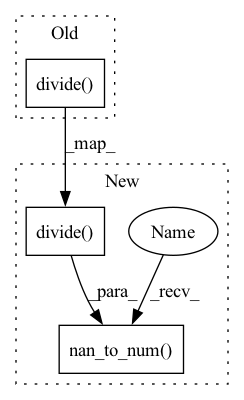

Pattern ID :13883
Before Change
Returns: matrix
// https://math.stackexchange.com/questions/2503428/derivative-of-binary-cross-entropy-why-are-my-signs-not-right
return -np.divide( targets,predictions)
////-----------CUPY---------------
def MSE_loss_cupy(outi, out0):
After Change
Returns: matrix
// https://math.stackexchange.com/questions/2503428/derivative-of-binary-cross-entropy-why-are-my-signs-not-right
return -np.nan_to_num( np.divide( targets,predictions,dtype=targets.dtype))
// return -np.nan_to_num(np.divide(targets,predictions))
// return -np.divide(targets,predictions)
////-----------CUPY---------------In pattern: SUPERPATTERN
Frequency: 3
Non-data size: 3
Instances Fragment ID: 46153299
Project Name: manassharma07/crysx_nn
Commit Name: d06f0eecf2b81ed36573b9b8382d8942dd9ea5b0
Time: 2022-01-14
Author: mikeatthetop@gmail.com
File Name: crysx_nn/loss.py
M Class Name: AnonimousClass
N Class Name: AnonimousClass
M Method Name: CCE_loss_grad(2)
N Method Name: CCE_loss_grad(2)
M Parent Class:
N Parent Class:
M File Name: crysx_nn/loss.py
N File Name: crysx_nn/loss.py
M Start Line: 181
M End Line: 181
N Start Line: 200
N End Line: 200
Before Change
Therefore, to get an answer similar to PyTorch, one must divide the result by the batch size.
// https://math.stackexchange.com/questions/2503428/derivative-of-binary-cross-entropy-why-are-my-signs-not-right
return -(cp.divide(targets,predictions)-cp.divide( 1-targets,1-predictions) )/predictions.shape[1]
def CCE_loss_cupy(predictions, targets, epsilon=1e-9):
After Change
// https://math.stackexchange.com/questions/2503428/derivative-of-binary-cross-entropy-why-are-my-signs-not-right
predictions = cp.clip(predictions, epsilon, 1. - epsilon)
// return -(cp.divide(targets,predictions)-cp.divide(1-targets,1-predictions))/predictions.shape[1]
return -(cp.nan_to_num(cp.divide(targets,predictions,dtype=targets.dtype))-cp.nan_to_num( cp.divide( 1.-targets,1.-predictions,dtype=targets.dtype)) )/predictions.shape[1]
def CCE_loss_cupy(predictions, targets, epsilon=1e-9):
Fragment ID: 46153301
Project Name: manassharma07/crysx_nn
Commit Name: 3781c3d27682094aafd10f8eb6544616ff9499c2
Time: 2022-02-01
Author: mikeatthetop@gmail.com
File Name: crysx_nn/loss.py
M Class Name: AnonimousClass
N Class Name: AnonimousClass
M Method Name: BCE_loss_grad_cupy(3)
N Method Name: BCE_loss_grad_cupy(2)
M Parent Class:
N Parent Class:
M File Name: crysx_nn/loss.py
N File Name: crysx_nn/loss.py
M Start Line: 294
M End Line: 294
N Start Line: 283
N End Line: 296
Before Change
// https://math.stackexchange.com/questions/2503428/derivative-of-binary-cross-entropy-why-are-my-signs-not-right
// Alternative 1
return -(np.divide( targets,predictions) -np.divide(1-targets,1-predictions))/predictions.shape[1]
@njit(cache=True,fastmath=True)
def CCE_loss(predictions, targets, epsilon=1e-7):After Change
// https://math.stackexchange.com/questions/2503428/derivative-of-binary-cross-entropy-why-are-my-signs-not-right
// Alternative 1 (Converts NAN resulting from division by 0 to 0 using Numpy, is incompatible with NUMBA)
return -(np.nan_to_num( np.divide( targets,predictions,dtype=targets.dtype)) -np.nan_to_num(np.divide(1.-targets,1.-predictions,dtype=targets.dtype)))/predictions.shape[1]
// Alternative 2 (Converts NAN resulting from division by 0 to 0 using Numpy, is compatible with NUMBA) !!! DOESNT WORK
// grad = np.zeros(predictions.shape)
// // grad = predictions Fragment ID: 46153302
Project Name: manassharma07/crysx_nn
Commit Name: d06f0eecf2b81ed36573b9b8382d8942dd9ea5b0
Time: 2022-01-14
Author: mikeatthetop@gmail.com
File Name: crysx_nn/loss.py
M Class Name: AnonimousClass
N Class Name: AnonimousClass
M Method Name: BCE_loss_grad(2)
N Method Name: BCE_loss_grad(2)
M Parent Class:
N Parent Class:
M File Name: crysx_nn/loss.py
N File Name: crysx_nn/loss.py
M Start Line: 153
M End Line: 153
N Start Line: 154
N End Line: 154